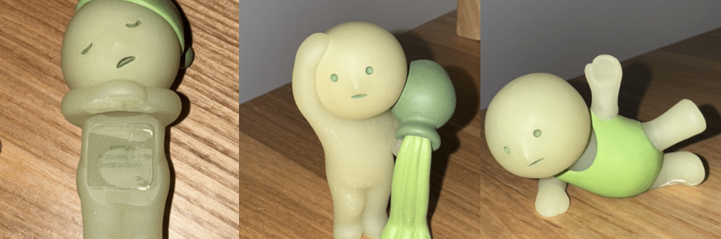
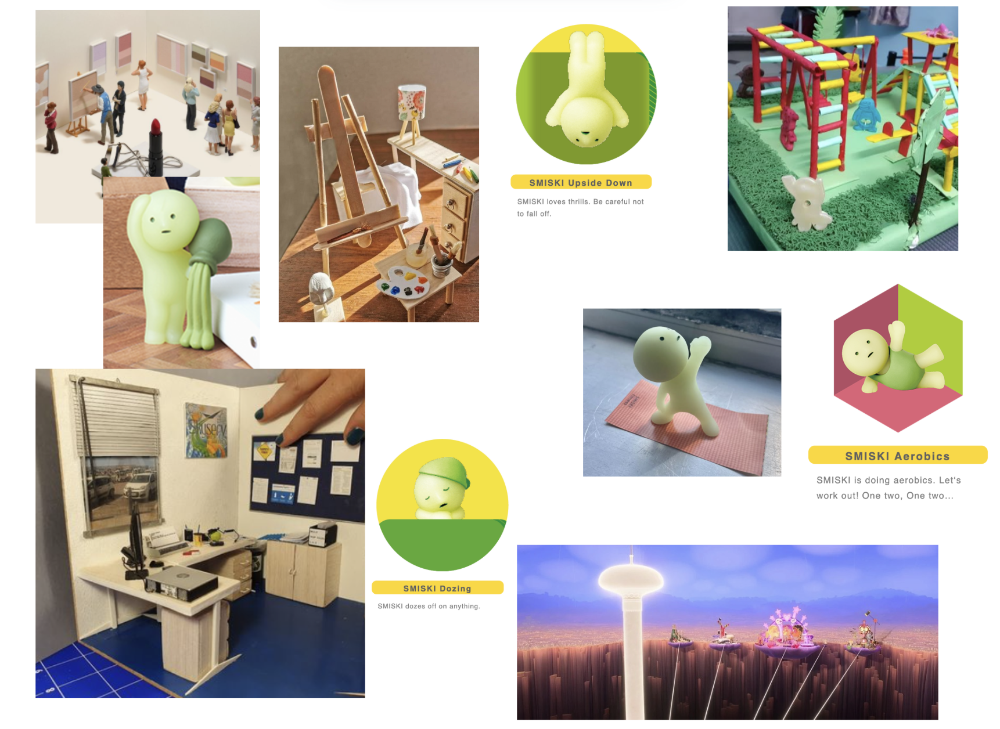
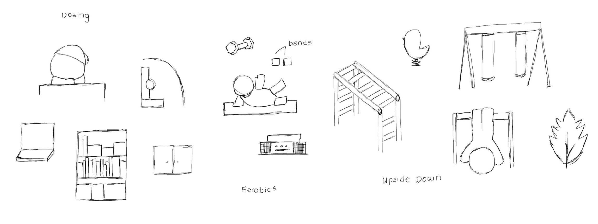
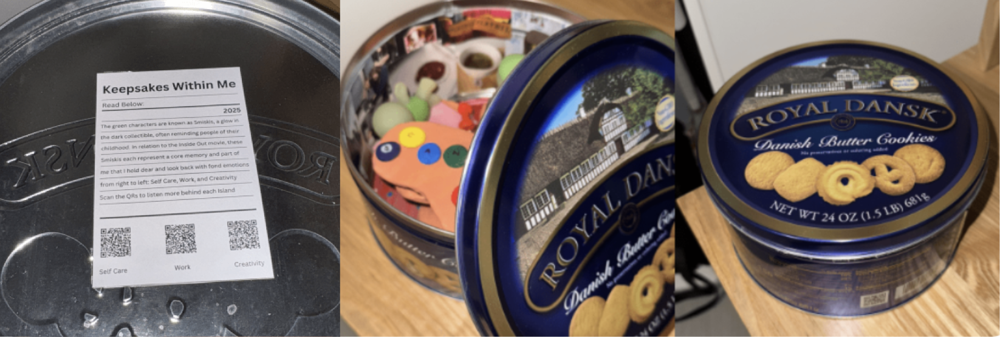
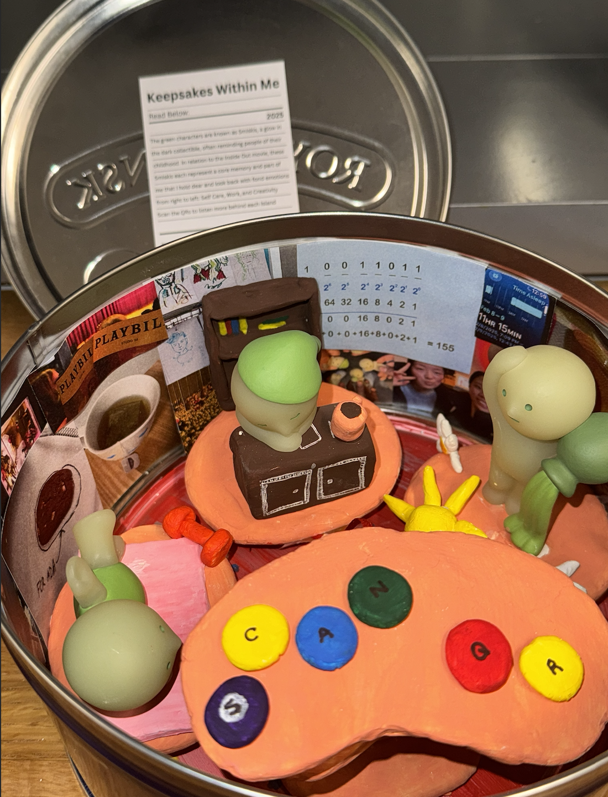
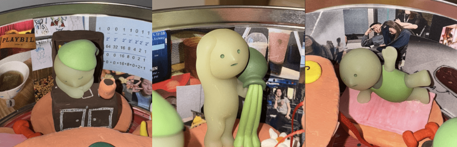
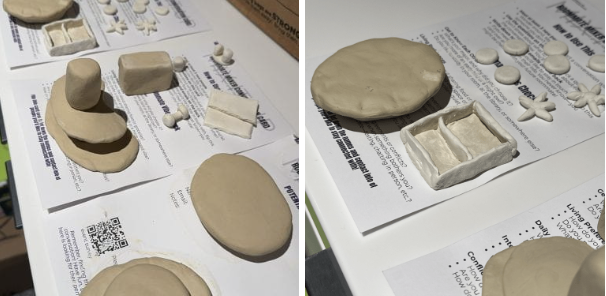

February 27, 2025
The inspiration that got my mind running for this project was my Smiskis, which are these glow-in-the-dark collectible figurines. They remind me of my childhood and bring back a sense of collecting that I used to do with stuffed animals as a kid. I picked three of my favorites that I could relate to which were the Dozing Smiski, The Source Smiski, and the Aerobics Smiski. After watching Inside Out, I was inspired to create them as islands that represent the things I value, hence, the Smiskis changed to my island of Work, Creativity, and Self-Care.
Left to Right(Before Project): Dozing Smiski, The Source Smiski, and the Aerobics Smiski
For the planning, I pulled images on Pinterest to get inspiration to create the setting of each island. I also drew out things that resonated with me and represented each theme. I also researched each Smiski, for example, one of the Smiskis, I got them from the museum series, and it's a replica of The Source by Jean Auguste Dominique Ingres. By doing so, I was able to learn more about the Smiski and create an environment that made sense with my own personal takeaway.
Through YouTube, I trained myself to edit more parts of the video manually, such as adding Chinese/English captions, and creating frames/effects. By creating the captions myself, I can relay texts that may be lost in translation. For these videos, I utilized Premiere Pro for video editing and Procreate/Photoshop to edit the thumbnail. For effects, such as the vintage film, I utilized effects from Adobe Stock.
 The cookie box pulls everything together as I wanted another aspect of memories, where people open the box to find anything but the cookies. After finding a box that would work with the size of the project, I used the box as my vessel. The vessel worked with the element of surprise as when I left the box in a public place, people opened the box and went “Oh Wow.” I wish I kept the menu paper for the work to use as a caption, but to replace this, I created my caption as a nutrition page. On the nutrition page, I introduced the audience to my work and also put QR codes for audiences that were motivated to hear more about how each Smiski connects to me. Since these memories are personal, I didn't want to create an audio that played out loud, so I wanted to create a more intimate way of audio by creating something the audience could personally listen to if they wanted to.
 My largest obstacle during the project was connecting the themes and finding ways to bring my ideas to life in a feasible way. I really appreciate the inspiration I got from exploring, whether it's on Pinterest for aesthetics or watching Inside Out which helped me develop ideas to better connect everything together.
Left to Right (After Project): Dozing Smiski, The Source Smiski, and the Aerobics Smiski
For the Dozing Smiski, I created a bookshelf, desk, chair, and cup of coffee to create the working environment. For The Source, I created flowers and a Sun to represent it as the source of energy. For the Aerobics Smiski, I created a yoga mat and weights to create the workout environment.
To make my project, I mainly utilized paint and air-dry clay. The process took me an average of 4 days to shape the clay, drying the clay, fixing the clay, painting, and layering. I also added pictures around the box in order to further create the setting of the piece by including pictures that my friends took of me sleeping, class notes, working out, museum visits, etc. that correlated with the themes. To attach everything together I mainly utilized tape and glue together to get extra security, and to also remove the Smiskis in a cleaner way after the project. To connect the islands, I used a red string in order to match the red paint I used to create the Inside Out environment on the box.
I also enjoyed seeing everyone's pieces, whether it was the variety of mediums but also the innovative translation processes. I learned more about other mediums I could work with, whether it's foil and mirrors which I never considered before. By working with these mediums, I think drawing everything out prior will help a lot in order to see each perspective and angle.
Return to Classes →